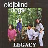

Celtic Lyrics Corner > Artists & Groups > Old Blind Dogs > Legacy > Tibbie Fowler
|  | Tibbie Fowler |
| Credits : |
a) Tibbie Fowler - traditional; arranged by Old Blind Dogs
b) Breton Dance Tune - Frederic Lambierge |
| Appears On : | Legacy |
| Language : | Scots-English |
Lyrics :
Tibbie Fowler o' the glen, there's ower mony wooin' at her
Tibbie Fowler o' the glen, there's ower mony wooin' at her
Ten cam' east and ten cam' west and ten cam' sailin' ower the watter
Twa cam' doon yon lang dyke side, there's ower mony wooin' at her
Chorus (after each verse)
:
Wooin' at her, pu'in at her
Wantin' her, canna get her
Silly elf, it's for her pelf
A' the lads are wooin' at her
Seven but and seven ben, aye seven in the pantry wi' her
Twenty heid aroon' the door, there's ower mony wooin' at her
She's got pendles in her lugs, aye cockle shells would set her better
High-heeled sheen wi' siller tags and a' the lads are wooin' at her
Be a lassie 'ere sae black o' gin she hid the penny siller
Set her up on Tintock Tap, the wind will blaw a minnie 'til her
Be a lassie 'ere sae fair o' gin she hid the penny siller
A flea would fell her in the air afore a man was even 'til her
Tibbie Fowler o' the glen, there's ower mony wooin' at her
Tibbie Fowler o' the glen, there's ower mony wooin' at her